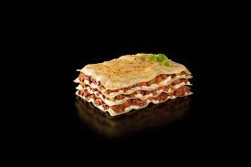

Lasagne

Lasagne is a classic Italian dish made by layering sheets of pasta with rich meat sauce,
creamy béchamel, and cheese, then baked to perfection. It's comforting, flavorful,
and perfect for a family meal or special occasions.
ingredients:
meat Sauce
- Olive oil
- 1 Onion
- 2 garlic cloves
- 500g beef or pork
- 400g crushed tomatoes
- 2 tablespoons of tomato paste
- 1 teaspoon dried oregano
- 1 teaspoon dried basil
- salt and pepper
Bechamel/Cheese sauce
- 500ml milk
- 3 tablespoons of butter
- 3 tablespoons of flour
- pinch of nutmeg
- salt and pepper
Other ingredients
- lasagne sheets
- grated mozzarella cheese
- grated parmesan cheese
instructions
- Make the meat sauce:
- heat olive oil in a pan over medium heat, cook onion and garlic until soft.
- once onions and garlic are soft, add meat and cook until browned.
- Stir in crushed tomatoes, tomato paste, oregano,basil,salt, and pepper
- simmer for another 20 minutes, stir occasionally.
- Make the Bechamel sauce
- Melt butter in a saucepan over medium heat
- add flour, whisk until butter and flour are mixed and no longer smell like flour
- Gradually pour in milk, whisk constantly to avoid lumps
- Cook until the sauce thickens, then season with salt, pepper, and nutmeg.
- Assemble the lasagne
- Preheat oven to 180deg
- Spread a thin layer of meat sauce to the bottom of the baking dish
- add a layer of lasagne sheet, follow by bechamel, then sauce, then repeat
- finish by placing a final sheet and then bechamel sauce
- sprinkle mozzarella and parmesan cheese on top layer
- bake:
- Cover the dish with aluminum foil to prevent drying out, and bake for 25m
- Remove the foil and bake for an additional 15-20mins or until golden and bubbling.
- remove from the oven and allow to rest 10 minutes before eating..
Enjoy your delicious homemade lasagne! 🍽️